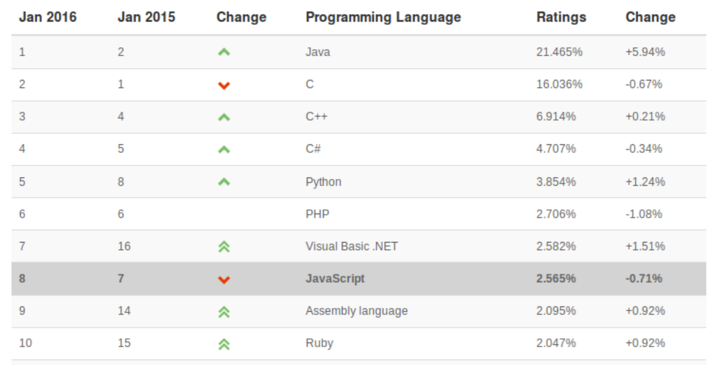
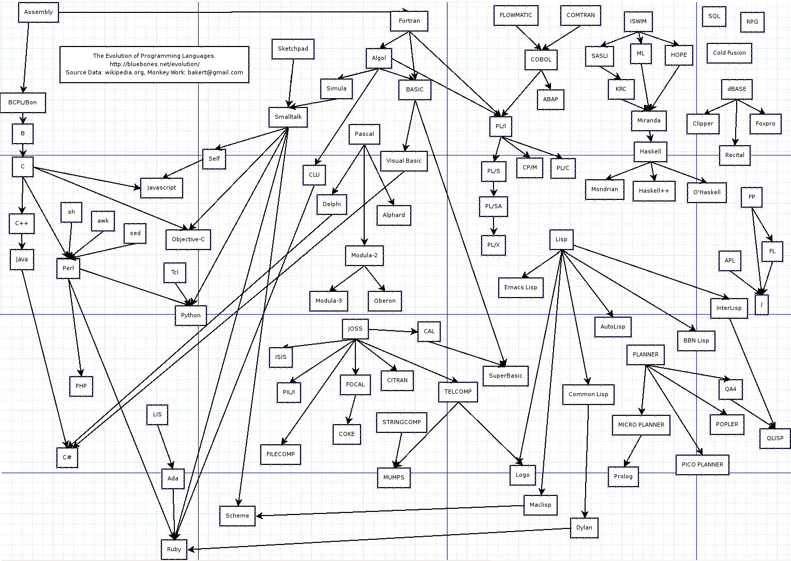

Outline
- Build on the basics from EMAT10007
- Explore two new programming languages
- Learn additional computing skills/knowledge
Lectures and times
- Labs 1100-1400 Fridays in QB F.101
- Dropin session 1600-1700 Tuesdays in MVB 1.07
- You are expected to also work outside of those times!
- 9 weeks of C (three coursework deadlines)
- 3 weeks of Java (class test at the end)
Assessments
| Assessment | Deadline | Weight |
|---|---|---|
| Basic C test | week 14 | 5% |
| Cpair | week 18 | 35% |
| Cind | week 21 | 35% |
| Java final | week 24 | 25% |
C deadlines
| Assessment | Deadline | Weight |
|---|---|---|
| week 13 | ||
| Basic C test | week 14 | 5% |
| week 15 | ||
| week 16 | ||
| week 17 | ||
| Cpair | reading week | 35% |
| week 19 | ||
| week 20 | ||
| Cind | week 21 | 35% |
| week 22 | ||
| Easter x3 | ||
| week 23 | ||
| Java test | week 24 | 25% |
C content
- Using the shell/compiler
- Elementary types
- Loops and conditionals
- Functions
- Makefiles
- Command line programs
- Arrays and strings
- Structs
- Multifile programs
C assignment
You will complete the first C assignment individually. The second assignment will be done in pairs. Then the last will be done individually again.
I will randomly assign the pairs (within cohort) once you have submited the basic C test. If you don't submit I won't pair you up with anyone. I will also assign each pair to a TA who will be your supervisor for the rest of the unit.
Plagiarism
We had problems with plagiarism the year before last:
- Fine to work together when not doing assignments
- Obviously fine to work with your partner when doing the pair assignment.
- Please do NOT work with other pairs.
- Do not share your code with anyone.
- (We will check for plagiarism)
More on this later...
Popular programming languages
{width=100%}
(From tiobe.com)
Family tree
{width=100%}
C
- Old but still widely used.
- Standard for working on any hardware.
- Core components in your computer
Things written in C/C++
- Windows/OSX/Linux (most operating systems)
- Browsers: Chrome, Firefox etc.
- High end computer games.
- Python
Python is actually a C program!
When C is good
- Fast programs
- Embedded systems
- Operating systems
- Core lower-level applications
- Program basic hardware (arduino etc)
- Need to run on specific hardware/OS
When C is bad
- Need to quickly make a program
- Speed (of program) is unimportant
- Simple high-level applications
- Need to run on wide range of hardware/OS
Demo Python/C...
Compilers and interpreters
Python is interpreted and C is compiled but what does that mean?
- Human readable code. This is the stuff that humans write and look at.
- Machine code. This is what the computer can actually execute.
Compilation
A compiler converts human code to machine code e.g.:
Human code:
int multiply(int a, int b)
{
int c = a * b;
return c;
}Machine code (and assembly):
0: 55 push %rbp
1: 48 89 e5 mov %rsp,%rbp
4: 89 7d ec mov %edi,-0x14(%rbp)
7: 89 75 e8 mov %esi,-0x18(%rbp)
a: 8b 45 ec mov -0x14(%rbp),%eax
d: 0f af 45 e8 imul -0x18(%rbp),%eax
11: 89 45 fc mov %eax,-0x4(%rbp)
14: 8b 45 fc mov -0x4(%rbp),%eax
17: 5d pop %rbp
18: c3 retqCompilation in C
Running C code is a two-step process:
- Compile the C code to machine code
- Run the compiled code
The computer can execute machine code directly (fast)
Python is interpreted
When you run your Python program it is not compiled to machine code. The interpreter reads the code and simulates executing it.
The interpreter itself is a C program that was compiled to machine code (by someone else).
How to learn C
Read the notes, and try out the examples. Do hte exercises and make sure that you know the answers to the questions.
Very important: you must actually try things. You can not learn to program simply by reading.
So go do it now...